คู่มือการใช้งาน กุยช่ายสวรรค์ App
ระบบบริหารร้านขนม กุยช่ายสวรรค์ · ฉบับพนักงานและผู้จัดการ
🥟 กุยช่ายสวรรค์ App คืออะไร?
เป็นระบบบริหารร้าน กุยช่ายสวรรค์ ที่ใช้บน โทรศัพท์มือถือ ทำหน้าที่:
- 📋 บันทึกเข้า-ออกงาน (พร้อมรูปเซลฟี่ + GPS อัตโนมัติ)
- 📦 จัดการสต๊อกสินค้า (เบิก / รับเข้า / ปิดร้าน / ตรวจนับ)
- 💰 บันทึกยอดขายรายวัน + แดชบอร์ดสรุป
- 🧾 บันทึกค่าใช้จ่ายร้าน + แนบรูปบิล
- 💵 ตรวจสอบเงินสดนำส่ง เข้าบัญชีร้าน
- 🥟 ผู้ช่วยกุยช่าย AI ถามข้อมูลร้าน + ช่วยทำโพสต์ขายของ
ทุกอย่างเก็บใน Google Sheet ของเจ้าของร้านอัตโนมัติ และส่งแจ้งเตือนเข้า LINE กลุ่ม ทุกเหตุการณ์สำคัญ
📲 วิธีติดตั้งบนมือถือ (ทำครั้งเดียว)
📱 iPhone (iOS)
- เปิด Safari เข้าเว็บแอป
- กดปุ่ม Share (รูปกล่องลูกศรขึ้น) ที่ขอบล่าง
- เลื่อนหา "Add to Home Screen" → กด Add
- ไอคอน กุยช่ายสวรรค์ จะปรากฏที่หน้าจอหลัก เปิดได้เลย
🤖 Android
- เปิด Chrome เข้าเว็บแอป
- กดปุ่ม ⋮ (3 จุด) มุมขวาบน
- เลือก "Install app" หรือ "Add to home screen"
- กดยืนยัน → ไอคอนจะติดที่หน้าจอหลัก
หลังติดตั้งแล้ว เปิดได้เหมือนแอปทั่วไป ไม่ต้องเปิด browser และทำงานในโหมด full screen สวยกว่า
กด ☰ (3 ขีด) มุมซ้ายบนเพื่อเปิดเมนู
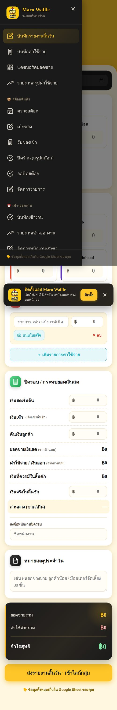
เมนูทั้งหมดของแอป — แบ่งเป็น 3 หมวด
👥 สำหรับพนักงาน
🌅 ตอนเช้า — เปิดร้าน
ขั้นที่ 1 · เช็คอินเข้างาน
- เปิดแอป → กด ☰ → เลือก "บันทึกเข้างาน"
- เลือกชื่อตัวเองจากรายการ
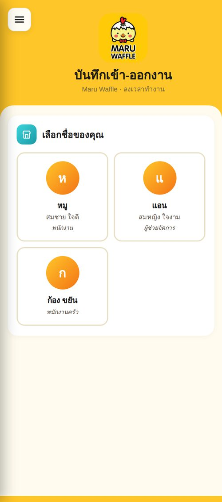
หน้าเลือกพนักงาน · เลือกชื่อของตัวเอง
- ใส่ PIN 4 หลัก (รหัสประจำตัว ถ้าลืมให้ถามหัวหน้า)
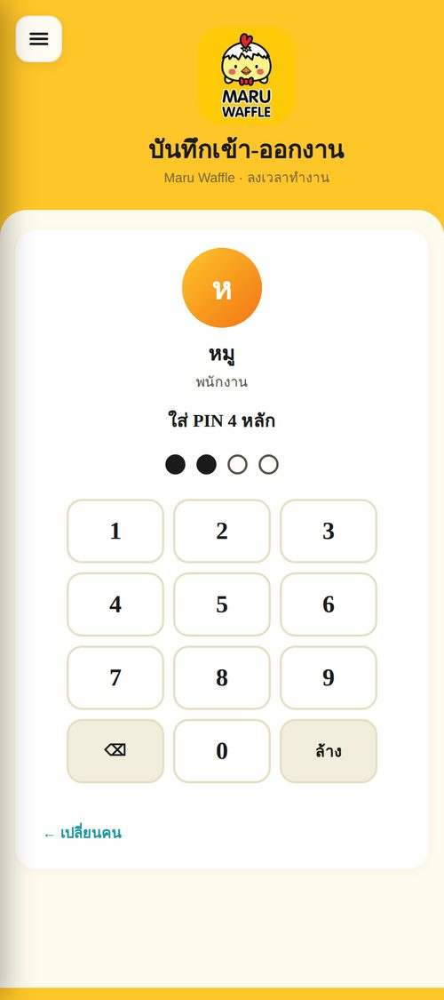
กดตัวเลข 4 หลัก ระบบจะตรวจอัตโนมัติเมื่อครบ
- แอปจะขออนุญาต กล้อง และ ตำแหน่ง GPS → กด "อนุญาต"
- รอให้ขึ้นข้อความ "✓ ในเขตร้าน" สีเขียว
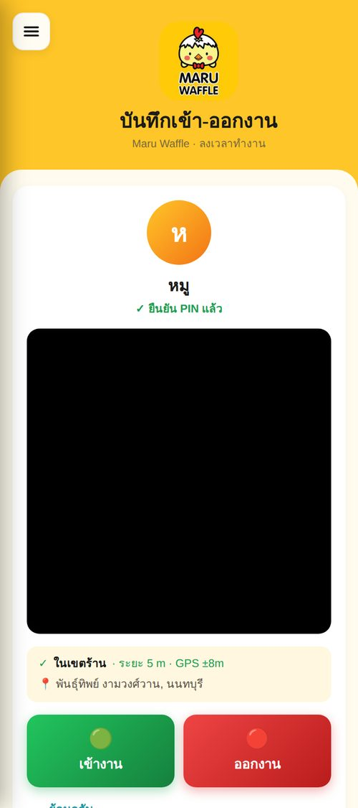
กล้องเปิดและ GPS ระบุว่าอยู่ในเขตร้าน · พร้อมกดลงเวลา
- หันหน้าเข้ากล้อง → กดปุ่ม 🟢 "เข้างาน"
- ระบบจะถ่ายรูป + แสตมป์เวลา + สถานที่ลงบนรูป → บันทึก → ส่ง LINE
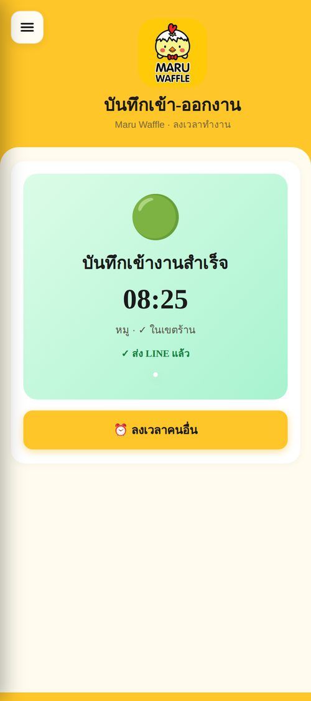
บันทึกสำเร็จ · ส่ง LINE แล้ว ✓
ถ้าขึ้น "⚠️ นอกเขตร้าน (XXX m)" สีส้ม แสดงว่าคุณอาจอยู่นอกบริเวณร้าน — ตรวจสอบให้แน่ใจว่าอยู่หน้าร้านจริงๆ ก่อนกดลงเวลา (แต่ก็ยังลงได้ ระบบจะบันทึกว่าอยู่นอกเขต)
ขั้นที่ 2 · ตรวจสต๊อกของก่อนขาย
- กด ☰ → "ตรวจสต๊อก"
- ดูของที่ใกล้หมด (แถบสีเหลือง) หรือหมดแล้ว (แถบสีแดง)
- ถ้าพบของหมด/ใกล้หมด → แจ้งหัวหน้าเพื่อสั่งของเพิ่ม
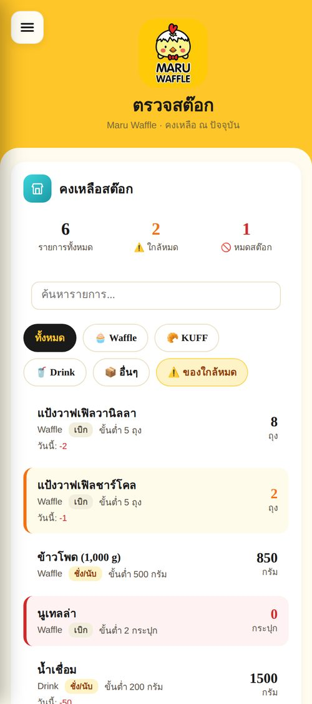
รายการสต๊อก · แถบสีบอกสถานะ (ปกติ/ใกล้หมด/หมด)
📋 ระหว่างวัน
เบิกของ (เมื่อหยิบของจากคลังหลังร้านมาใช้)
- กด ☰ → "เบิกของ"
- กรอกชื่อตัวเองในช่อง "ผู้บันทึก"
- เลือกหมวด (Waffle / KUFF / Drink / อื่นๆ) → ค้นหาหรือเลื่อนหารายการ
- ใส่จำนวนที่เบิก (กด
+/− หรือพิมพ์)
- เลือกได้หลายรายการในครั้งเดียว → กด "บันทึกเบิก"
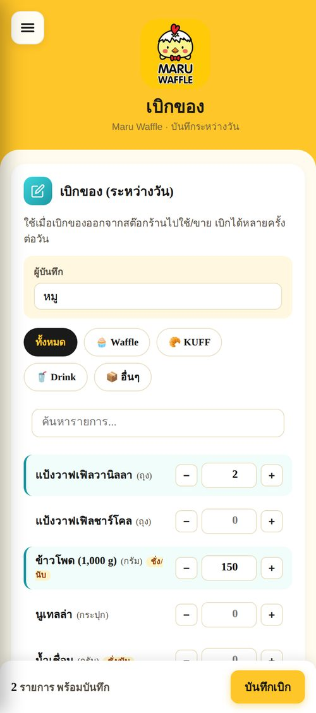
หน้าเบิกของ · แถวที่เลือกจะมีเส้นฟ้าซ้าย
เบิกได้หลายครั้งต่อวัน ไม่ต้องรอสะสมไว้ทีเดียว เบิกแล้วบันทึกเลยจะแม่นยำที่สุด
รับของเข้า (เมื่อซัพพลายเออร์ส่งของมาที่ร้าน)
- กด ☰ → "รับของเข้า"
- กรอกชื่อพนักงาน
- 📎 กด "แนบรูปบิล" → ถ่ายรูปบิลเก็บไว้เป็นหลักฐาน
- เลือกรายการ + จำนวนที่รับเข้า
- กด "บันทึกรับเข้า"
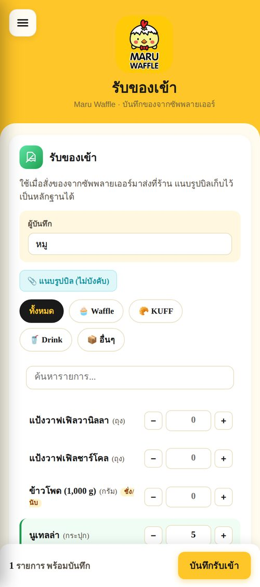
หน้ารับของเข้า · มีปุ่มแนบรูปบิล
นับของให้ครบก่อนเซ็นรับ ถ้าบิลไม่ตรงกับของจริง ให้แจ้งซัพพลายเออร์ทันที
บันทึกยอดขายและค่าใช้จ่าย
- หน้าหลัก ("บันทึกรายงานสิ้นวัน") → กรอกยอดขายแต่ละช่องทาง (เงินสด/โอน/แอปเดลิเวอรี)
- เพิ่มค่าใช้จ่ายที่เกิดขึ้นในวันนั้น (วัตถุดิบ/อื่นๆ) — สามารถแนบรูปบิลได้
- กด "บันทึก" → ระบบจะคำนวณกำไรขาดทุนและส่ง LINE สรุป
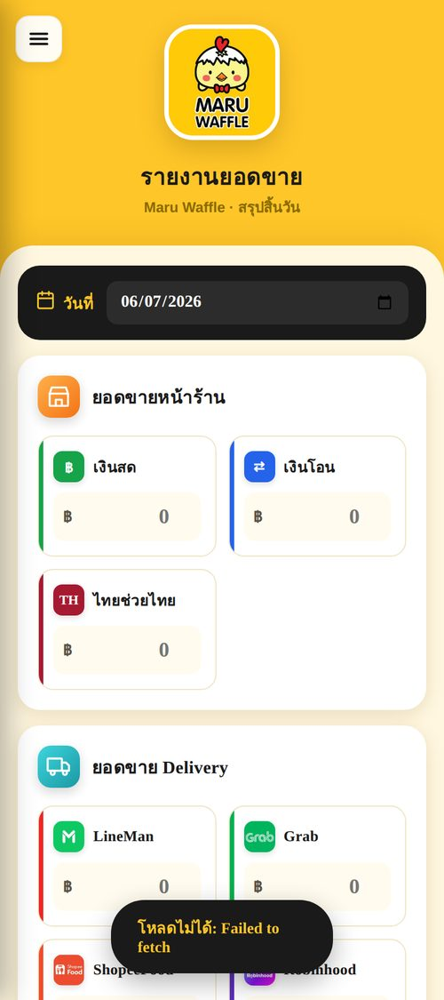
หน้าหลัก · บันทึกยอดขายรายวัน
🌙 ตอนเย็น — ปิดร้าน
ขั้นที่ 1 · นับสต๊อกของหน่วยกรัม
ของที่หน่วยเป็น "กรัม" (ซอส, ผงต่างๆ, ครีม) ต้องชั่งจริงตอนปิดร้านเพื่อรู้ปริมาณคงเหลือ
- เตรียมเครื่องชั่ง
- นำของแต่ละรายการมาชั่งหาน้ำหนักจริง (หักน้ำหนักภาชนะ)
- จดตัวเลขไว้พร้อมกรอกในแอป
ขั้นที่ 2 · ปิดรอบสต๊อก
- กด ☰ → "ปิดร้าน (สรุปสต๊อก)"
- กรอกชื่อผู้ปิดรอบ
- กด chip "🟡 ต้องนับ" เพื่อโฟกัสรายการที่ต้องชั่ง
- กรอกคงเหลือของแต่ละรายการ (ในช่องสีเหลือง)
- ถ้ามีของเสียระหว่างวัน — กรอกในช่อง "ของเสีย"
- กดปุ่ม 🌙 ปิดรอบ · ส่ง LINE
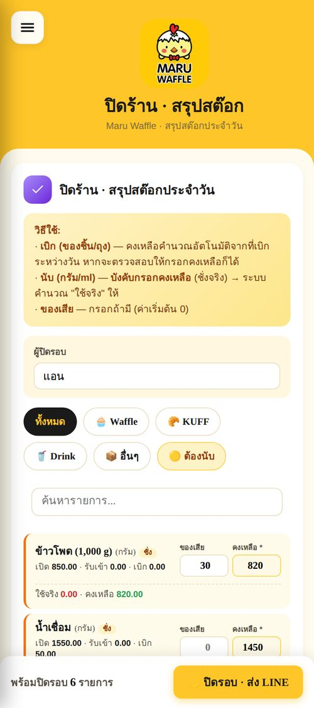
หน้าปิดร้าน · กรอกคงเหลือสำหรับรายการกรัม + ของเสีย
ระบบจะคำนวณ "ใช้จริง" ให้อัตโนมัติจากสมการ: เปิด + รับเข้า − คงเหลือ − ของเสีย
ขั้นที่ 3 · เช็คเอาท์ออกงาน
- กด ☰ → "บันทึกเข้างาน"
- เลือกชื่อตัวเอง → ใส่ PIN
- กดปุ่ม 🔴 "ออกงาน"
- ตรวจสอบว่า LINE มีแจ้งเตือนออกงานเข้ามาเรียบร้อย
💵 นำส่งเงินสด (นำเงินเข้าบัญชีร้าน)
เมื่อถึงรอบนำเงินสดในลิ้นชักเข้าบัญชีร้าน ทำตามนี้
- กด ☰ → "เงินสดนำส่ง"
- การ์ดบนสุดจะบอก "ยอดรอนำส่ง" ที่ระบบคำนวณให้ (ยอดขายเงินสด − ค่าใช้จ่าย POS ในรอบ)
- กดปุ่ม "📤 บันทึกการนำส่ง"
- กรอกชื่อผู้นำส่ง + ยอดที่นำส่งจริง (โอนเข้าบัญชีเท่าไหร่)
- แนบสลิปโอน (ไม่บังคับ แต่แนะนำให้แนบ)
- กด "✓ บันทึกการนำส่ง" → รอเจ้าของยืนยัน
ส่งแค่บางช่วงได้: ถ้ารอบเป็น 1–22 แต่จะส่งแค่ถึงวันที่ 20 — เลือก "ถึงวันที่นำส่ง" เป็นวันที่ 20 ระบบจะคำนวณยอดใหม่ให้ทันที ส่วนวันที่ 21–22 จะค้างไว้รอบถัดไปอัตโนมัติ
ยอดที่นำส่งจริงควรตรงกับยอดที่ระบบคำนวณ ถ้าต่างกัน ระบบจะแสดงส่วนต่างให้เจ้าของเห็นตอนยืนยัน
👔 สำหรับผู้จัดการ
📊 ดูรายงาน
รายงานเข้า-ออกงาน · ดูได้ทั้งรูป + GPS
- กด ☰ → "รายงานเข้า-ออกงาน"
- เลือกช่วงวันที่ (วันนี้ / 7 วัน / 30 วัน / เดือนนี้ หรือกรอกเอง)
- กรองตามพนักงานคนใดคนหนึ่ง หรือเฉพาะเข้า/ออก
- คลิกที่รูปการ์ดเพื่อขยายดูรูปเซลฟี่เต็มจอ พร้อมข้อมูลครบ
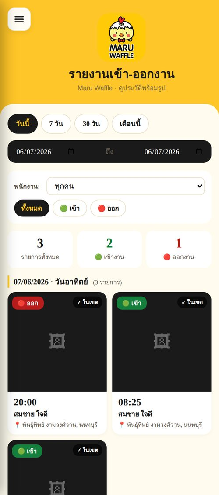
รายงานเข้า-ออกงาน · จัดกลุ่มตามวันที่ + filter ครบ
KPI ด้านบนแสดง: รายการทั้งหมด · จำนวนเข้า · จำนวนออก ทำให้ตรวจสอบได้รวดเร็ว
แดชบอร์ดยอดขาย
- กด ☰ → "แดชบอร์ดยอดขาย"
- เลือกช่วงวันที่ → ดูยอดรวม · ค่าเฉลี่ย · กราฟ · แบ่งตามช่องทาง (เงินสด/โอน/แอป)
รายงานสรุปค่าใช้จ่าย
- กด ☰ → "รายงานสรุปค่าใช้จ่าย"
- เลือกช่วงวันที่ + ประเภท → สรุปยอดและรูปบิลทั้งหมด
🔧 จัดการสต๊อก
ออดิทสต๊อก (ตรวจนับจริงเทียบกับระบบ)
- กด ☰ → "ออดิทสต๊อก"
- กรอกชื่อผู้ตรวจ
- นับสต๊อกจริงแต่ละรายการ → ใส่ตัวเลขในช่อง "นับจริง"
- ระบบเทียบกับ "ในระบบ" อัตโนมัติ — แถบสีบ่งบอก:
- 🟢 เขียว = ตรงระบบ หรือ เกิน
- 🔴 แดง = ขาด (น้อยกว่าระบบ)
- ใส่เหตุผลของส่วนต่าง (ลูกค้าทำตก / ตวงไม่ตรง / ของหาย / ฯลฯ)
- ติ๊ก ☑ "ปรับคงเหลือในระบบ" ถ้าต้องการให้ระบบใช้ตัวเลขที่นับจริง
- กด "🔍 บันทึกออดิท · ส่ง LINE"
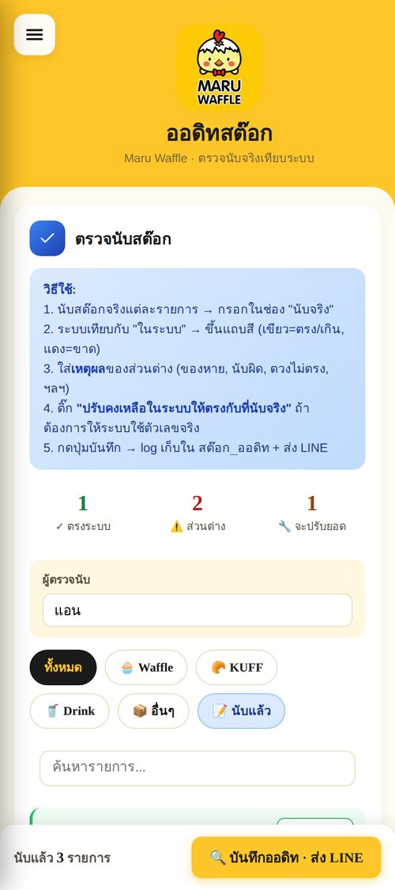
ออดิทสต๊อก · สีบ่งบอกสถานะ + เหตุผล + ปรับยอดได้
ใช้ฟีเจอร์นี้เป็นระยะ (เช่น สัปดาห์ละครั้ง หรือเดือนละครั้ง) เพื่อตรวจสอบว่าระบบยังตรงกับของจริง
จัดการรายการสต๊อก · ตั้งสต๊อกขั้นต่ำ
- กด ☰ → "จัดการรายการ"
- เลือกรายการ → ตั้งค่า:
- หน่วย — กรัม / ถุง / ขวด ฯลฯ
- โหมด —
เบิก (ของชิ้น) หรือ นับ (กรัม/ml)
- สต๊อกขั้นต่ำ — เกณฑ์แจ้งเตือนของใกล้หมด
- สถานะ — ใช้งาน / หยุดใช้
- กด "บันทึก" รายต่อรายการ
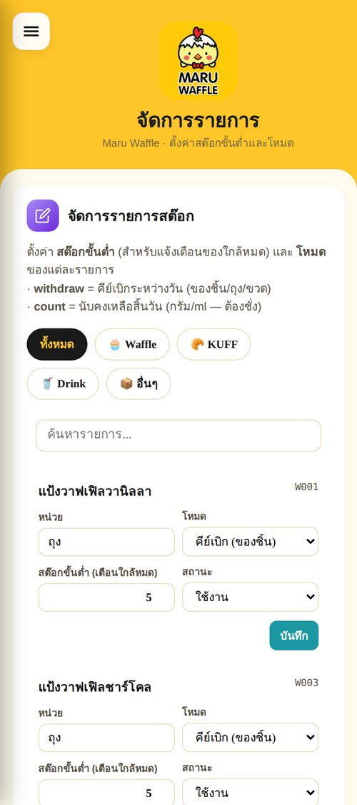
จัดการรายการสต๊อก · ตั้งค่าทีละรายการ
👥 จัดการพนักงาน + สาขา
เพิ่ม/แก้พนักงาน
- กด ☰ → "จัดการพนักงาน/สาขา"
- Tab 👥 พนักงาน → กด "+ เพิ่มพนักงาน"
- กรอกข้อมูล:
- ชื่อ-นามสกุล (จำเป็น)
- ชื่อเล่น (จะแสดงในแอป)
- ตำแหน่ง
- PIN 4 หลัก (สำหรับล็อกอิน — ให้พนักงานเก็บเป็นความลับ)
- สถานะ — ใช้งาน / หยุดใช้ (พนักงานออกแล้วให้ปิดใช้งานแทนการลบ)
- กด "บันทึก"
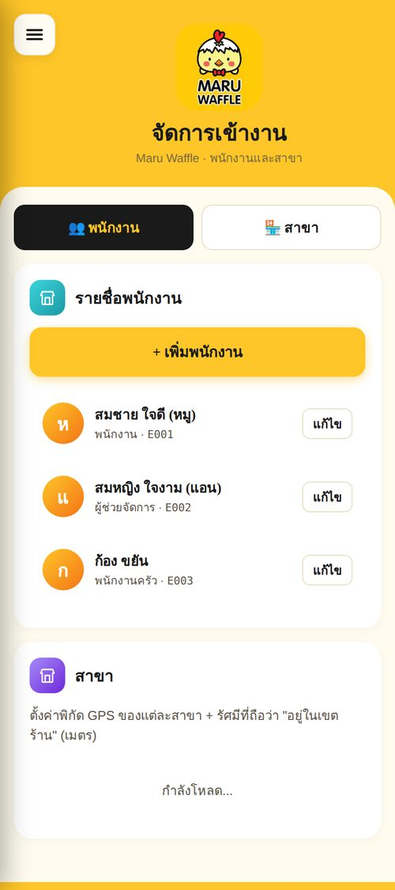
หน้าจัดการพนักงาน · เห็นทุกคนพร้อมสถานะ
ตั้งค่าสาขา · พิกัด GPS
- กด tab 🏪 สาขา → กด "แก้ไข" ที่สาขา
- กด "📍 ใช้ตำแหน่งปัจจุบัน (GPS)" ขณะยืนอยู่หน้าร้านจริง
- ตั้งค่า รัศมี (เมตร) ที่ถือว่า "อยู่ในเขตร้าน" (แนะนำ 50-100 ม.)
- กด "บันทึก"
ถ้าตั้งรัศมีกว้างไป (เช่น 500 ม.) จะตรวจสอบไม่ได้ว่าพนักงานอยู่ที่ร้านจริง
ถ้าแคบไป (เช่น 10 ม.) อาจเช็คอินไม่ผ่านเพราะ GPS คลาดเคลื่อน — 50-100 ม. กำลังดี
💵 ตรวจรับเงินนำส่ง (เจ้าของ)
- กด ☰ → "เงินสดนำส่ง"
- การ์ด "🔐 รอเจ้าของยืนยัน" จะแสดงรายการที่พนักงานนำส่งมา
- ดูว่ายอดที่นำส่งจริงตรงกับที่ระบบคำนวณไหม (ระบบบอกส่วนต่างให้)
- ถ้าถูกต้อง กด "✓ ยืนยันรับเงิน" → ใส่รหัสเจ้าของ
- ถ้าผิดปกติ กด "ทักท้วง" + ใส่เหตุผล
หลังยืนยัน รอบใหม่จะเริ่มนับจากวันถัดจากวันที่นำส่งล่าสุดให้อัตโนมัติ
💰 การจ่ายเงิน / เงินเดือน (เจ้าของ)
หน้านี้มีข้อมูลค่าจ้าง/เงินเดือน ต้องใส่ รหัสเจ้าของ ก่อนเข้าดู
- กด ☰ → "การจ่ายเงิน"
- ใส่รหัสเจ้าของเพื่อปลดล็อก
- ดูสถานะการจ่ายของพนักงานแต่ละคน (รอบ / ยอด / จ่ายแล้วหรือยัง)
- เมื่อจ่ายเงินจริงแล้ว กดบันทึกการจ่ายเพื่อปิดยอดรอบนั้น
🥟 ผู้ช่วยกุยช่าย
กุยช่ายเป็นผู้ช่วย AI ในแอป ถามข้อมูลร้านหรือให้ช่วยทำโพสต์ขายของได้ — เปิดได้จากปุ่มกุยช่ายมุมขวาล่าง หรือเมนู → "ผู้ช่วยกุยช่าย"
💬 ถามข้อมูลร้าน
- กดปุ่มคำถามด่วน (ยอดขาย / สต๊อก / ค่าใช้จ่าย / เข้างาน) หรือพิมพ์ถามเอง
- ตัวอย่างคำถาม: "ยอด Grab เดือนนี้เท่าไหร่", "มีของอะไรใกล้หมด", "เบิกล่าสุดเมื่อไหร่ ใครเบิก", "เงินสดรอนำส่งเท่าไหร่"
- กุยช่ายดึงข้อมูลจริงจากระบบมาตอบให้ (ยอดขาย/สต๊อก/ค่าใช้จ่าย/เข้างาน/เงินสด)
ข้อมูลค่าจ้าง/เงินเดือนต้องใส่รหัสเจ้าของก่อนถาม
- กดปุ่ม 📎 แนบรูปสินค้า (ถ้าอยากได้แค่แคปชั่น ไม่ต้องแนบก็ได้)
- พิมพ์สิ่งที่ต้องการ เช่น "ทำโพสต์ลด 20% ลงเฟส" — ระบุช่องทางได้ (เฟส / LINE / IG / TikTok)
- กุยช่ายร่างแคปชั่นให้ กดปุ่มคัดลอกไปโพสต์ได้เลย
- ถ้าแนบรูป จะมีสไตล์โปสเตอร์ 6 แบบให้เลือก กดแล้วได้รูปพร้อมปุ่มดาวน์โหลด
- อยากให้ AI แต่งภาพให้สวยขึ้น พิมพ์ "แต่งรูป" (ทำได้เฉพาะจากรูปที่แนบ)
ในหน้าผู้ช่วยมีปุ่ม "ℹ️ วิธีใช้โหมดการตลาด" กดดูขั้นตอนแบบละเอียดได้ตลอด
❓ คำถามที่พบบ่อย
ลืม PIN ทำยังไง?
ติดต่อหัวหน้าหรือเจ้าของร้าน ให้เข้าหน้า "จัดการพนักงาน/สาขา" → กดแก้ไขที่ชื่อตัวเอง → ตั้ง PIN ใหม่
GPS ขึ้น "นอกเขตร้าน" ทั้งที่อยู่หน้าร้าน?
ตรวจสอบ:
1. เปิด GPS บนมือถือไว้แล้วหรือยัง
2. ลองออกจากใต้หลังคา/อาคาร — GPS รับสัญญาณดีกว่าในที่โล่ง
3. รอ 5-10 วินาทีให้ GPS แม่นยำขึ้น
4. ถ้ายังไม่ผ่าน — กดลงเวลาได้ตามปกติ ระบบจะบันทึกว่า "นอกเขต" และผู้จัดการจะเห็น
LINE ไม่มีแจ้งเตือนเข้ามา?
ตรวจสอบในแอป LINE:
1. ไม่ได้ปิด notification ของกลุ่ม?
2. Bot ยังเป็นสมาชิกในกลุ่มอยู่ไหม?
3. ถ้ายังไม่เข้า — แจ้งผู้จัดการให้ตรวจสอบการตั้งค่าใน Apps Script
กล้องไม่ขึ้นภาพ ตอนเช็คอิน?
1. ลองรีเฟรชหน้า (ปิดเปิดแอป)
2. ตรวจว่าอนุญาตการใช้กล้องในการตั้งค่า browser/แอป
3. ปิด-เปิด permission ของกล้องใหม่อีกครั้ง
อยากแก้ตัวเลขที่บันทึกไปแล้ว ทำยังไง?
ข้อมูลทุกอย่างเก็บใน Google Sheet — ผู้จัดการแก้ตรงในชีตได้เลย (ระวังการแก้ตัวเลขเก่าอาจกระทบยอดคงเหลือสต๊อกในระบบ)
รูปไม่ขึ้นในรายงาน?
รูปเก็บไว้บน ImgBB เซิร์ฟเวอร์ — ถ้ารูปไม่ขึ้นอาจเป็น:
1. เน็ตอ่อน → รอสักครู่หรือลองใหม่
2. รูปเก่าถูกลบจาก ImgBB → ไม่สามารถกู้ได้
เบิกของผิดจำนวน บันทึกไปแล้ว?
2 วิธี:
1. เบิกซ้ำเพื่อหักลบ เช่น เบิก 5 → ผิด ต้องการ 3 → ไปเบิกอีก -2 (ใส่ค่าลบ — แต่ระบบไม่รับลบ)
2. แจ้งผู้จัดการให้แก้ในชีต สต๊อก_เบิก โดยตรง
วันนี้พนักงานลืมเช็คอินตอนเช้า ทำยังไง?
ลงตอนรู้ตัวเลย — ระบบจะบันทึกตามเวลาจริง ผู้จัดการเห็นในรายงานได้ว่ามาช้ากว่าปกติ
วิธีบันทึกเป็น PDF: กดปุ่ม "พิมพ์" ด้านบน → ใน dialog เลือก "Save as PDF" หรือ "บันทึกเป็น PDF" → กด Save
จะได้ไฟล์ PDF ที่ส่งใน LINE กลุ่ม หรือพิมพ์ใส่กระดาษติดผนังหลังร้านได้